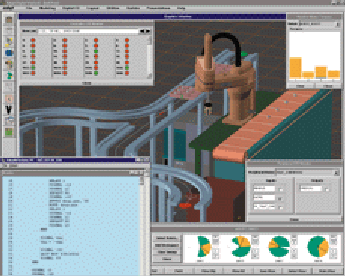

- Kétirányú megközelítés
- Szimuláció
- Mint a valós és absztrakt világ modellezése
- Életjáték, Tierra, RoboCup, stratégiai játékok
- Robot
- Egyedi vagy általános szimulációs környezetek
- Rossum's Playhouse, SimRobot, Adept Digital Workcell, Deneb Quest

- A világ pontos leírása
- Komplex feladatok:
- Három dimenziós tér
- Fénytörés
- Takarás
- Mozgás,ütközés
- Szenzorok
- A két megközelítés találkozása: 1. Artificial Life Creators Contest
- Intelligens ágensek, valós robot szimulálásához